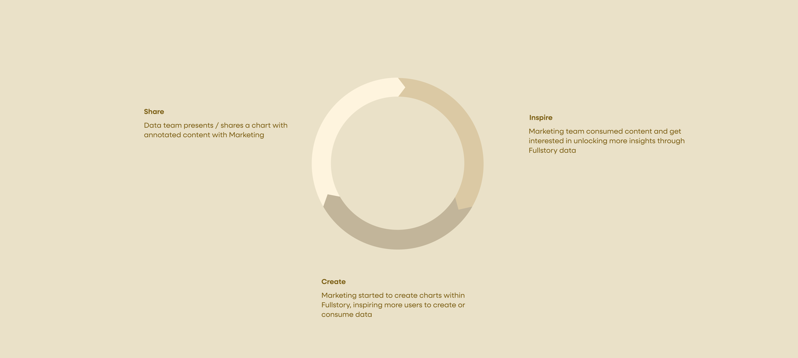
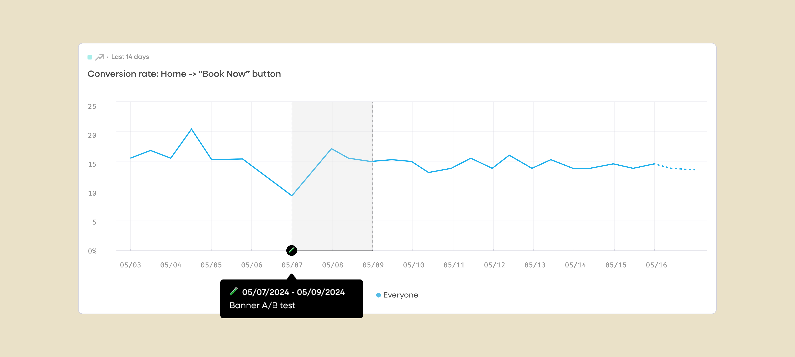
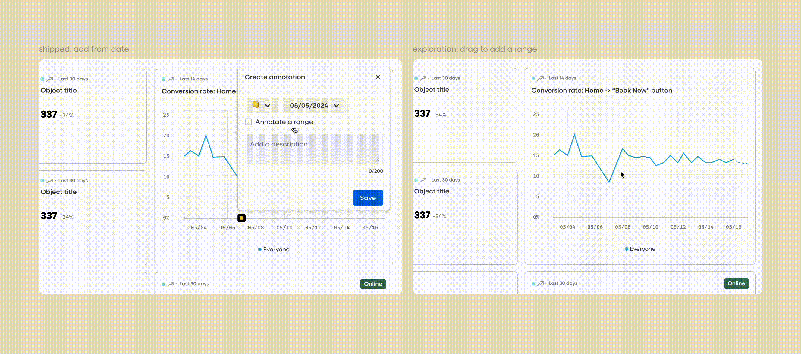
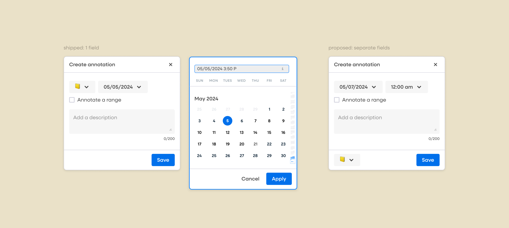

Chart Annotation @ Fullstory
Expand and retain good-fit customers

Type
- Industry Work
- Product Design
Duration
- 3 months
My Role
- Product Designer
What I Did
- Product Design
- UX Research
Project Overview
Add context to data changes with annotations
Fullstory is a behavioral analytics platform that aims to combine qualitative and quantitative insights. In FY25, Fullstory made a big bet in focusing on good-fit customers in retail, e-commerce, food, travel and finance industries and expanding in the Enterprise market (Accounts generating > $100K in ARR).
These good-fit customers rely heavily on real-time data to monitor website performance, sales numbers and A/B testing outcome. In other words, data teams across these industries need a way to capture changes caused by outages, launch of new products or A/B testings in their data to help inform critical business decisions.
Business Opportunities based on User Insights
Data teams present with charts to show impact
Apart from bringing new capabilities to help data teams better understand the changes in the data, I noticed opportunities for customer expansion while reviewing notes from customer calls – Data teams within large organizations often include screenshots of charts from Fullstory in their presentation to the leadership team. Moreover, in day-to-day conversations, data teams share links to Fullstory dashboards to shed light on changes in data with cross-functional partners.
Along with the launch of unlimited seats in Fullstory, I see annotation as an experiment in deepening account penetration beyond merely a way to help data teams recall events. Throughout the process of building annotations, I helped the team make key product decisions based on the formation of an expansion loop.

Design Challenge
How might we foster conversations without bringing distractions while increasing perceived value beyond data teams through annotations?
Two of the most heated debates I had with my triad throughout the process were
- How visible should the ability to add annotations be?
- How are annotations on charts different from notes or comments?
Slapping an annotation on a chart is easy but it should not distract data teams from understanding and interacting with data. Moreover, how might we know annotation is the best solution, compared to similar features like Notes or more common features like comments in driving engagement amongst data teams and their stakeholders?
Solution Overview
A cherry on top of iced cold data
To determine whether annotation, comments or note is the focus of the solution, I brought the discussion to the larger product team for broader perspectives and looked into customer feedback from support tickets. As it turned out, the request for comments and annotations were very similar. Eventually, the team landed on solving where the biggest gaps are – adding context to charts. This way, even in absence of a comment feature, the annotations can still be shared via an url with the team where conversations are taking place today such as Slack and Teams.

Key Design Iterations
Adding an annotation
Depending on the types of events, users would want to add context to a single time stamp (eg product launch, insight, etc) or a range (eg 2-day sale event). To balance learnability and discoverability of the annotation feature while minimizing distractions, I explored multiple entry points to add annotation from, interaction to trigger the annotation modal and layouts to accommodate both scenarios.
Eventually, the team took a more radical approach in terms of adding annotations to maximize initial adoption but quickly learned from customer feedback that people would love the best of both worlds with the ability to toggle the annotation on or off, which was later on implemented as a fast-follow.


Time picker tradeoff
Due to time constraint and the existing pattern built into the date/time picker, I had to combine the date and time into 1 field in the annotation modal. While the existing pattern (right) affords better flexibility in specifying time, the discoverability of time control was lower compared to my recommendation (left).
In the beta release, 1 internal user shared feedback on the discoverability issue of the time picker field, which validated my concern. The team agreed that we will continue to monitor the feedback and usage to prioritize improving the experience.

Result & Impact
Strong signals on a more collaborative data analytics experience
The successful launch of annotations provided early signals of increasing user engagement through adding context to chart data. To double down on account expansion (more teams within an organization getting value out of Fullstory, leading to more deals), I rotated from the Core product team to the Enterprise team to work on empowering users to collaborate with cross-functional teams with more granular access control.
- Within 1st month of GA, 10% of users in both Enterprise and Commercial accounts have applied at least 1 annotation
- Maintained a 18.34% adoption rate amongst Enterprise customers without use of any in-app nudges (tooltips/notification) to date
- Engagement with Fullstory product analytics features peaked all time high in June 2024